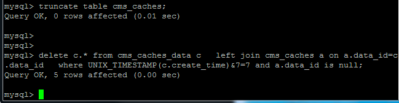

目前数据库我是用了一个缓存功能建立的表结构分为两个，第一个表用做索引，第二个表用做实际数据读写，这两个表用一个唯一的字符串进行关联。删除的过程我不是两边都做删除，为了删除效率，每次我仅对索引的表对应行进行删除，而数据表每隔1小时进行统一删除操作。目前数据量在3w行，大小约为600mb，统一删除时遇到了严重的性能问题，最终考虑了曲线救国的策略分段清理，在此留下记录。
首先要说的一点是，像我这样简单粗暴的把mysql当做非关系型数据库来使用是不合理的，因为这样做对于数据库的读写压力非常大。我这么做仅仅是因为不想额外搞一个redis这样的服务上去罢了。
生产环境中发现读写效率正常，但清理时目前每次都是在30秒左右，我的删除语句是这样写的：
delete cms_caches_data.* from cms_caches_data
left join cms_caches a on a.data_id=cms_caches_data.data_id
where a.data_id is null;我已经对这两个表的data_id做了索引，但依然无法避免这个问题，这是因为这个查询必然是全表扫描的。所以我略做思考，优化之后增加了一个限定条件：
delete c.* from cms_caches_data c
left join cms_caches a on a.data_id=c.data_id
where UNIX_TIMESTAMP(c.create_time)&`+ch+`=`+ch+` and a.data_id is null;其中ch是一个程序内部的变量，我设定其范围是 [1,128]，初始值1，每清理一次这个变量加1。这样做就可以在清理时扫表压力减轻到1/128（128是可以调节的）。如果数据量更大则把128放得更大，实践证明确实有效减少了清理时的数据库压力，几乎能达到瞬间完成。

相关文档
随便看看